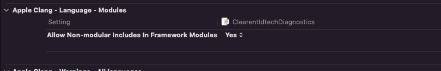
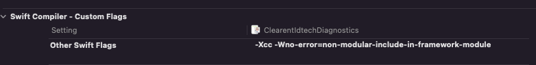

Cocoapod (recommended)
Use our latest pod 4.0.9
Podfile example
source 'https://github.com/clearent/CocoaPods.git'
platform :ios, '13.0'
target 'Name_Of_Your_project' do
use_frameworks!
# Our pod
pod 'ClearentIdtechIOSFrameworkPod', '4.0.9'
end
Extra configuration
Our framework exposes IDTech capabilities and leverages its return codes. For this reason some IDTech headers are exposed. You need to adjust
a couple of build settings related to 'non modular' issues. We left this set up out of the pod so you could review this and make the determination
if this would impact your project. We do not believe it will but there could be a special case.
For both objective c and swift apps set Allow Non-modular includes In Framework Modules to Yes

For Swift apps add this to OTHER_SWIFT_FLAGS
-Xcc -Wno-error=non-modular-include-in-framework-module

Carthage
- Install Carthage if you have not done so. ex - brew install carthage.
- Add your github credentials to XCode.
- Add a Cartfile to your project (at root).
- Point to Clearent's github repository for this framework by adding the following to your Cartfile - github "clearent/ClearentIdtechIOSFramework" "3.1"
- Run this command from your project's root folder. This command will pull down a copy of the Clearent Framework and build it locally under Carthage/Build. - carthage update
- On your application targets’ General settings tab, in the Embedded Binaries section, drag and drop the Clearent Framework from the Carthage/Build folder.
- Additionally, you'll need to copy debug symbols for debugging and crash reporting on OS X.
On your application target’s Build Phases settings tab, click the + icon and choose New Copy Files Phase.
Click the Destination drop-down menu and select Products Directory.
From the Clearent framework, drag and drop its corresponding dSYM file.
- Build your app. The Clearent Framework should be available for use.